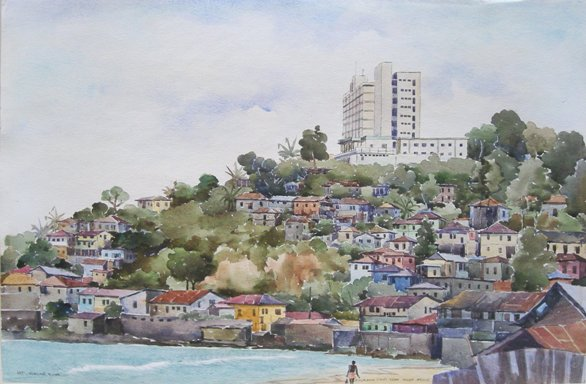
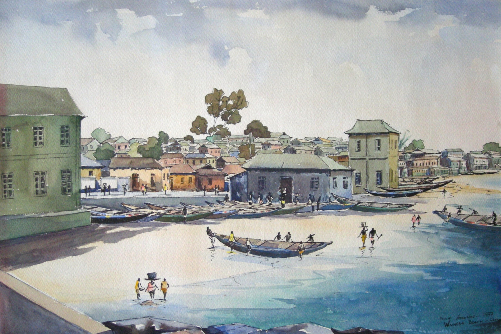
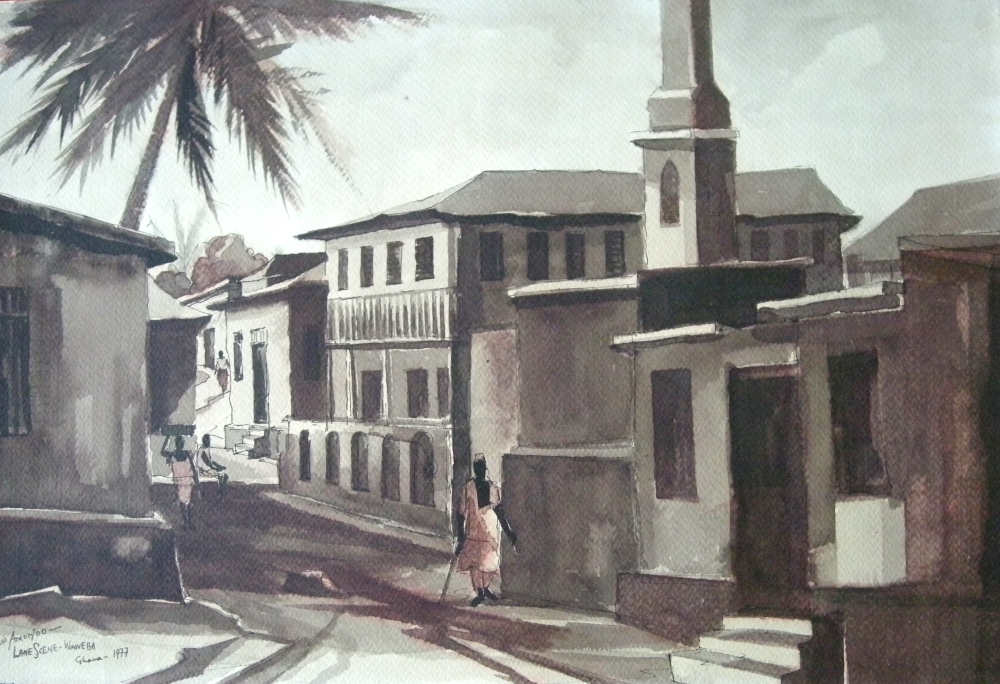
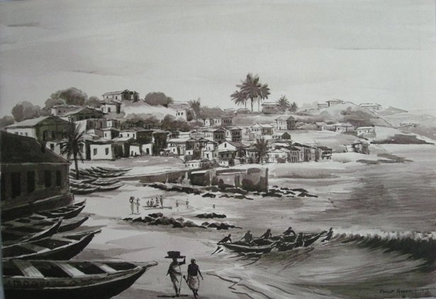

Philip Amonoo
1922–2011
Artist Biography
Philip Morland Amonoo was one of the pioneer artists who rose to prominence in Ghana after its independence in 1957. Painting in a realist style, his illustrations were used in Godfrey Brown’s book “An active history of Ghana” in 1962 and in 1963 the Ghanaian government gifted to the British government an Amonoo pastel portrait of a lady. This is now in the Government Art Collection. Amonoo in the early 1970s was part of a group of artists called Tekarts which held annual shows in Winneba and Accra, the most famous of whom was El Anatsui. Amonoo’s work is in the Florence Benson contemporary Ghanaian art collection, and was also shown at the Hammonds House Museum in Atlanta USA in 2011-12 in the exhibition Contemporary Artists of Africa Here and Abroad.
 Royal Netherlands Embassy, Monrovia, Liberia
Royal Netherlands Embassy, Monrovia, Liberia



